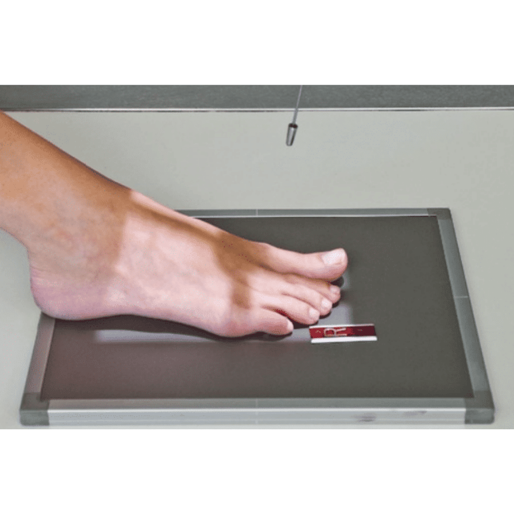
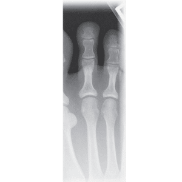
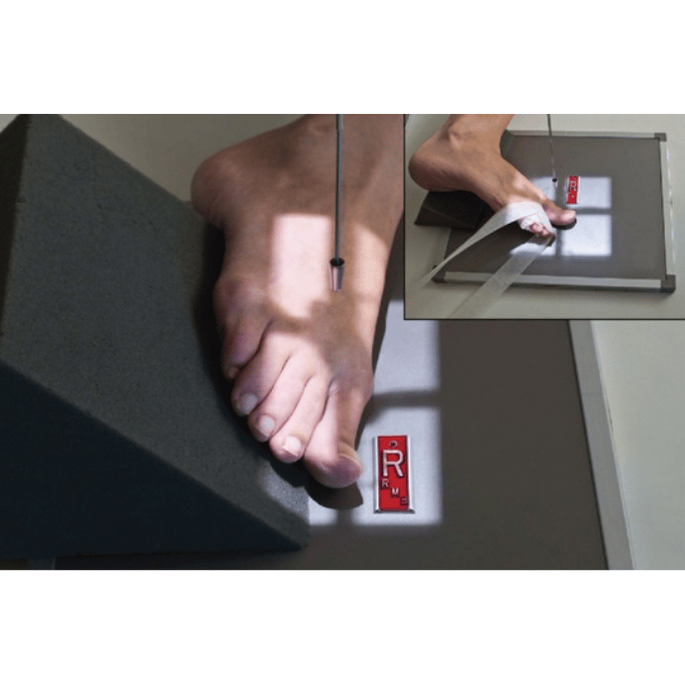
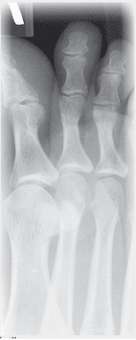

dedos / ARTELHOS / PODODÁCTILOS - ap
Paciente
Sentado ou em D.D., joelho em flexão, ante pé apoiado sobre o chassi, dedo de interesse centralizado.
Chassis / Filme
18×24 – Transversalmente
Raio central
⊥ orientado para o centro do dedo.
DFF
1,00 m – sem bucky.


Observação: O R.C. poderá sofre angulação no sentido cranial.
dedos / Artelhos / PODODÁCTILOS - OBLÍQUAS
Paciente
Sentado ou em D.D., joelho em flexão ante pé obliquado internamente ± 30º apoiado sobre o chassi, dedo de interesse centralizado.
Chassis / Filme
18×24 – Transversalmente
Raio central
⊥ orientado para o centro do dedo.
DFF
1,00 m – sem bucky.


Observação: Para o dedo hálux poderá ser realizada incidência oblíqua média lateral/externa.